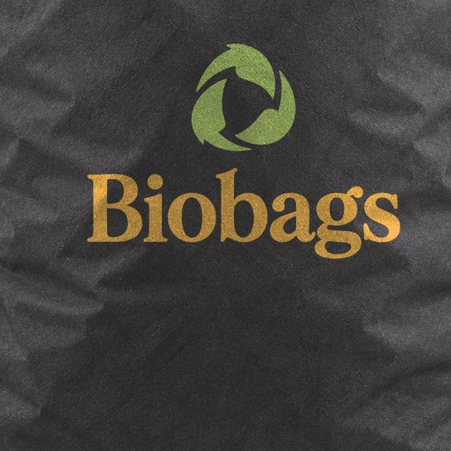
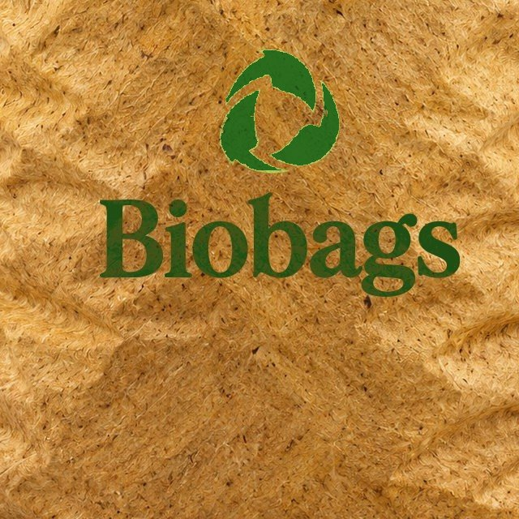
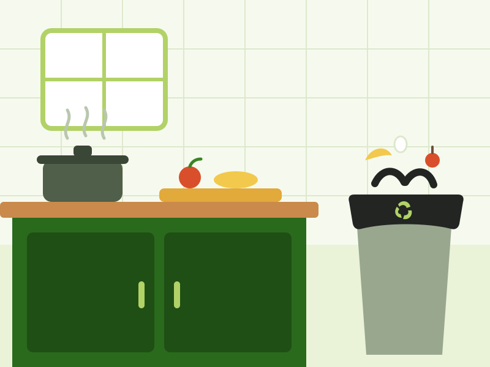
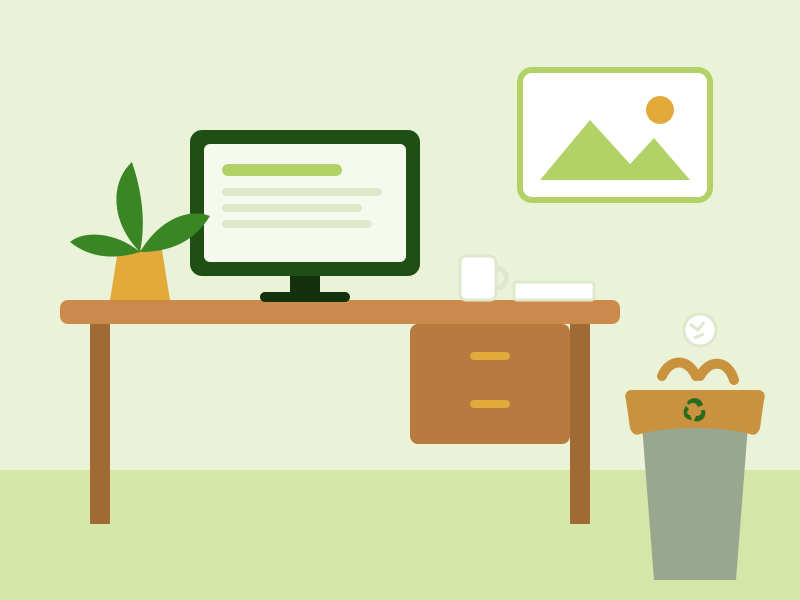
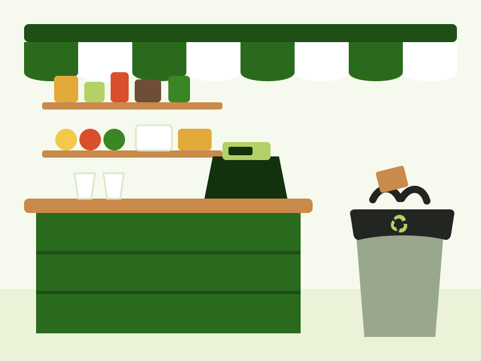

Cocina
- Cáscaras de frutas y verduras
- Restos de comida
- Café molido y bolsitas de té
- Cascarones de huevo
- Servilletas y papel de cocina
Se degradan en meses, no en siglos. Y atrapan el mal olor mientras las usas.
El plástico común dura cientos de años. Bio Bags, solo meses en compostaje.
Su material atrapa los olores y deja un aroma suave a limón o a café.
Para la cocina, el baño, la oficina o tu negocio.
Hecha a mano, con materiales naturales. Cada compra apoya el proyecto.
Las dos se degradan en meses. Cambian el tamaño, el material y el aroma.
Úsala para la basura de todos los días. Aquí van algunos ejemplos.
Estos residuos pueden romper la bolsa o dañar el compost.
Mira la textura del material y dónde usar cada bolsa.






Nuestra causaUna bolsa plástica se usa unos minutos, pero se queda en el ambiente cientos de años.
Bio Bags nace para cambiar eso: bolsas que cumplen su función y luego vuelven a la tierra.
Cada compra paga la siguiente tanda de bolsas.
Unos meses en compostaje. Una bolsa plástica común tarda cientos de años. El tiempo exacto depende del calor, la humedad y el lugar donde termine.
Aguanta la basura de todos los días. La Básica es la más grande (hasta 50 L) y va mejor con restos de comida y basura pesada. La Plus (hasta 30 L) es ideal para basura ligera y seca. Para que dure más, no la llenes de más y evita líquidos y objetos punzantes.
Básica: de carbón activado, hasta 50 L, aroma a limón. Para la cocina y botes grandes.
Plus: de cáscara de banano, hasta 30 L, aroma a café. Para el baño, la oficina y botes pequeños.
Sí, entregamos en Honduras. Al recibir tu pedido te contactamos para acordar el lugar, el día y el costo de envío según tu zona.
Cuando confirmamos tu pedido te enviamos las formas de pago disponibles. No necesitas pagar nada en esta página.
A producir más bolsas: la materia prima, la elaboración a mano y la entrega. Así cada compra ayuda a sacar más plástico de uso único de las casas y negocios.
Elige tu bolsa y cuántos paquetes. Te contactamos para coordinar la entrega.
Página de demostración — conecta aquí tu pasarela de pago o enlace de contacto.